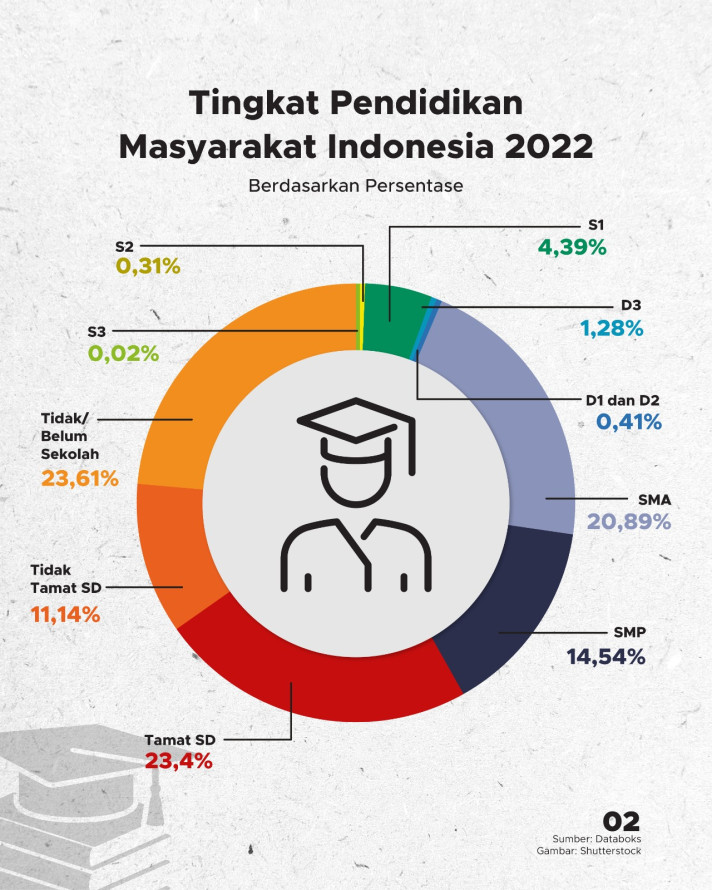

Perkembangan pendidikan di Indonesia memang melewati jalan yang sangat panjang.
Dari waktu ke waktu ada transformasi pendidikan agar arah pendidikan di Indonesia menjadi lebih baik lagi.
Bisa dibilang pendidikan di Indonesia sekarang sudah lebih baik, terlebih dengan hadirnya teknologi yang semakin canggih.
Pendidikan di Indonesia sudah dimulai sejak masa kerajaan Hindu-Budha hingga masa reformasi yang mana sistem pendidikan yang digunakan berbeda-beda.
Berikut Pembahasannya:
Pendidikan pada masa ini sangatlah kental dan identik dengan keagamaan. Pelaksanaan kegiatan pendidikan dilaksanakan di padepokan-padepokan. Pada masa ini materi yang diajarkan cukup banyak, seperti bahasa dan sastra (ilmu kecakapan), teologi (ilmu agama), ilmu eksakta (ilmu perbintangan), ilmu kemasyarakatan (ilmu sosial), ilmu pasti (seni bangunan, perhitungan waktu, seni rupa) dan sebagainya.
Pendidikan pada masa Kerajaan Islam terkoodinasi oleh para Wali Jawa,terutama Wali Songo. Pendidikan agama Islam dimasa ini disebut dengan Pendidikan Islam Tradisional. Namun Pendidikan Islam Tradisional ini tidak diselenggarakan secara terpusat, tetapi diupayakan secara perorangan didalam suatu wilayah.
Pada abad ke-16 bangsa Portugis dan bangsa Spanyol datang ke Indonesia dengan tujuan untuk berdagang dan juga missionaris (menyebarkan agama katholik). Disaat itu, bangsa tersebut juga mendirikan sekolah dengan kurikulum yang berisi pendidikan agama katholik. Selain itu, murid-murid juga diajarkan dengan mata pelajaran membaca, menulis dan juga berhitung.
Perkembangan pendidikan pada masa ini diawasi secara ketat oleh Belanda. Meskipun pada zaman kolonial Belanda, sistem pendidikan di Indonesia sudah terstruktur dan lebih baik. Sayangnya, anak-anak Indonesia hanya memiliki kesempatan pendidikan yang sangat terbatas. Sekolah pada zaman ini sangat diskriminatif karena sekolah didirikan berdasarkan lapisan sosial masyarakat. Hanya sebagian kecil saja yang bisa menikmati sekolah. Akibatnya, mayoritas masyarakat Indonesia buta huruf.
Saat Jepang menguasai nusantara, kekuasaan kolonial Belanda mulai runtuh. Runtuhnya masa kolonial diikuti dengan tumbangnya sistem pendidikan. Dimasa ini Pemerintahan Jepang menghapus pembagian sekolah berdasarkan kelas sosial, yang akhirnya sekolah sekolah untuk semua pribumi dibuka.
Pendidikan pada masa pra kemerdekaan bersifat demokratis yaitu menerapkan wajib belajar sekolah bagi anak-anak yang sudah berusia 8 tahun. Pada masa ini ditetapkanya UUD 1945 dan pancasila sebagai dasar sistem pendidikan nasional. Jenjang pendidikan pada masa ini sudah mulai disempurnakan menjadi SMTP dan SMTA serta mulai mempersiapkan sistem pendidikan nasional sesuai dengan UUD 1945.
Pemerintahan Orde Baru melakukan usaha pembangunan terencana dalam Pelita I, II, III dan seterusnya. Akan tetapi, pada masa itu keuangan negara membengkak sehingga mendorong dibangunnya SD Inpres (Instruksi Presiden), mengangkat guru-guru dan juga mencetak buku pelajaran. Adapun hasil dari Pelita I di bidang pendidikan adalah 10.000 orang guru telah terdaftar, 6000 gedung SD dibangun, membagikan lebih dari 63,5 buku SD dan 57.740 orang guru terutama guru SD diangkat.
Pada awal masa reformasi masih menggunakan Kurikulum 1994. Beberapa saat kemudian Kurikulum 1994 diubah menjadi Kurikulum 2000 dan disempurnakan menjadi kurikulum 2002 (Kurikulum Berbasis Kompetensi). Kurikulum ini fokus pada 3 aspek utama yaitu aspek afektif, kognitif dan juga psikomotorik. Pada tahun 2005, Kurikulum 2002 digantikan dengan Kurikulum Tingkat Satuan Pendidikan (KTSP). Pada tahun 2013, Kurikulum kembali diubah menjadi Kurikulum 2013. Kurikulum 12 (K13) menekankan pada kompetensi berbasis sikap, keterampilan dan juga pengetahuan.
Presentase Tingkat Pendidikan Masyarakat Indonesia
created with
Website Builder Software .